Learning Objectives
After completing this lesson, you’ll be able to:
- Give users options when using self-serve applications.
- Configure a self-serve service with published parameters.
Resources
- Starting workspace | C:\FMEData\Workspaces\CreateDataIntegrationApps\exercise-create-a-user-controlled-workspace.fmw
- Complete workspace | C:\FMEData\Workspaces\CreateDataIntegrationApps\exercise-create-a-user-controlled-workspace-complete.fmw
Introduction
In this exercise, you will use user parameters to allow users to customize the output community mapping features using the Data Download service on FME Flow.
1) Open and Inspect the Starting Workspace
Open the starting workspace in FME Workbench. The workspace reads in community features from the CommunityMap file geodatabase and then writes them out using a Generic writer, which allows writing to any FME-supported format.
In the Navigator window, expand the Output [GENERIC] writer Parameters and the User Parameters. A parameter has already been created that allows the user to select the writer format for the output data and it has been linked to the writer parameters.
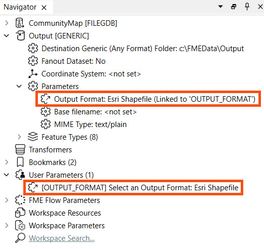
Right-click User Parameters and select Manage User Parameters. You should see the OUTPUT_FORMAT parameter and its configuration settings. Expand Choice Configuration to see the format options that are configured and then set the default value to Esri Shapefile.
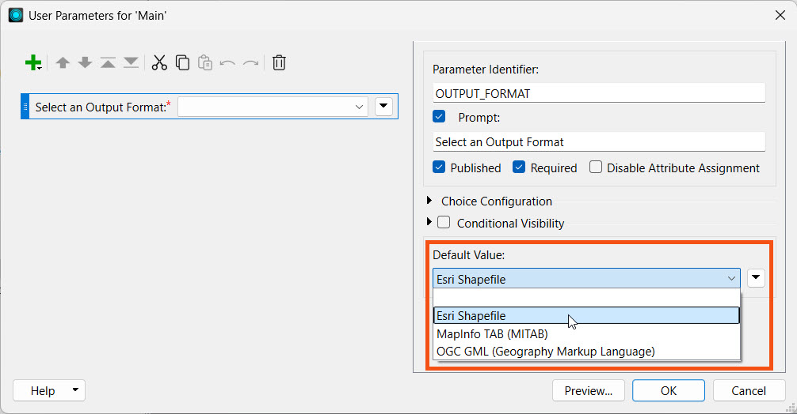
This is one of the options for where you can create and manage user parameters for your workspace.
Click OK to close the user parameters window.
2) Add a User Parameter for Reader Feature Types
Currently, our workspace allows the user to control which format the data is written out to. However, all of the CommunityMap feature datasets will be written so next we will add some user control over which datasets they want to be included in the output.
In the Navigator pane, expand the CommunityMap [FILEGDB] reader and further expand Parameters and Feature Types to Read sections.
Right-click on Feature Types to Read parameter and select Create User Parameter.
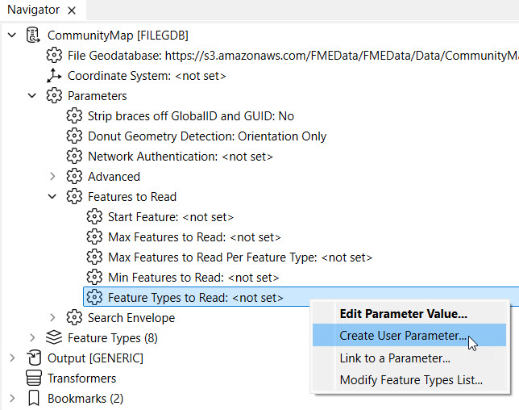
This opens a window showing a list of Feature Types and the user parameter name, prompt, and default value. The default settings do not need changing, so click OK to close the window and create the user parameter.
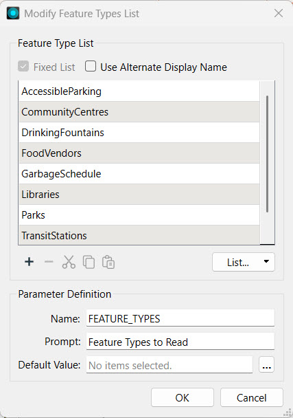
In the Navigator, you will see the Feature Types to Read writer parameter has been linked to the FEATURE_TYPES user parameter.
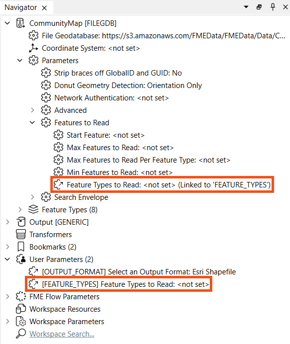
Now you should have 2 user parameters, one allowing the user to control the output writer format and one to control which feature types to read and be included in the output.
3) Run Workspace
Ensure Prompt for Parameters in enabled and then click Run Workspace.
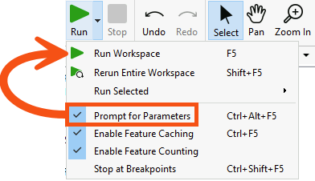
This opens the prompt where you select the output format from the drop-down and the community map feature types to include.
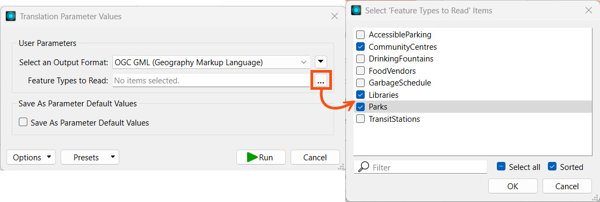
After you've made your selections, click Run. Only the feature type(s) you've selected will be read from the File Geodatabase and included in the output of your chosen format.
Optionally, save the workspace and then either click Publish on the top toolbar or select File > Publish to FME Flow.
Connect to your FME Flow and select the Training repository for the workspace. If the Training repository doesn't exist, click New to create it.
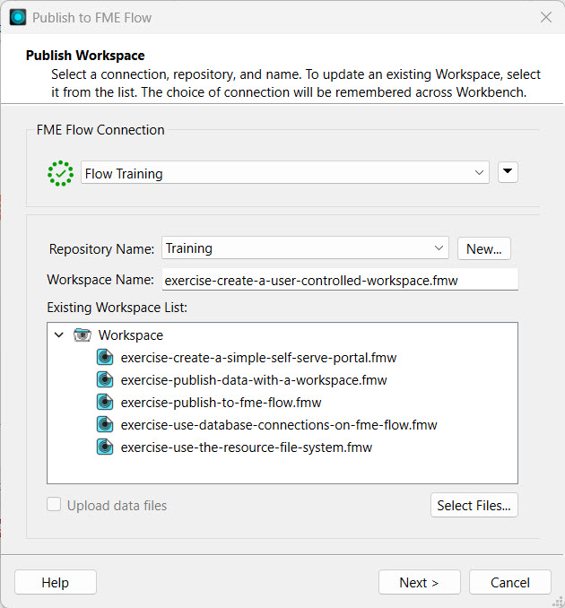
Click Next.
Register the workspace with the Data Download and Job Submitter services. Then click Publish.

5) Run Workspace on FME Flow
Navigate and log into your FME Flow. You can click the Direct Link to the workspace on FME Flow from the translation log in FME Workbench after publishing to open the workspace directly.
On the Run Workspace page, select the Training repository, the workspace we just published, and the Data Download service.
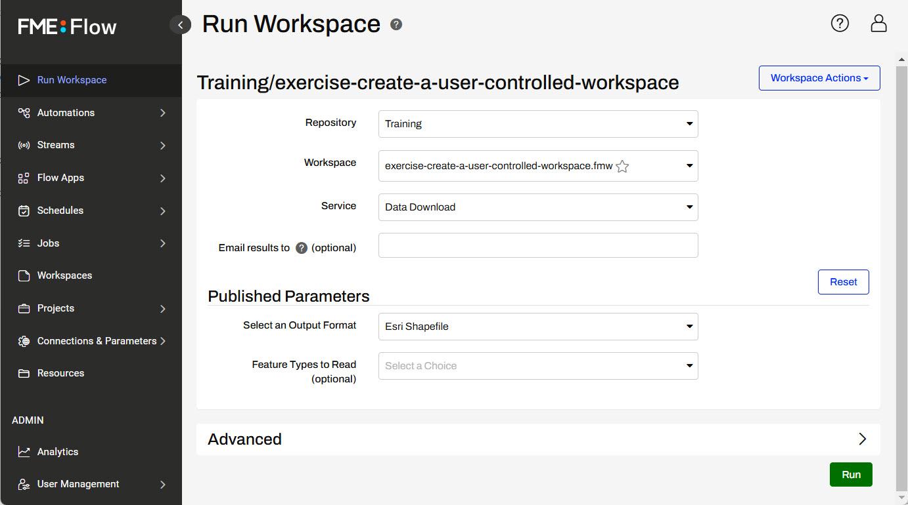
Under Published Parameters, you should see the user parameters we configured in FME Workbench. Select your desired output format from the drop-down options.
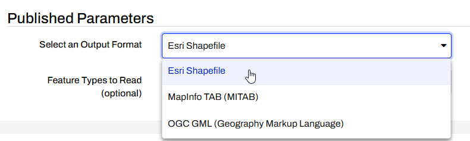
Select one or multiple Feature Types to Read from the drop-down multi-select options.
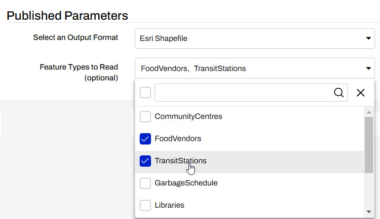
Once you have selected the parameters, click Run.
11) View the Results
The Data Download service presents a URL link to the translation results in a zip file. A quick inspection of the contents of the zip file confirms the results are what we expected.
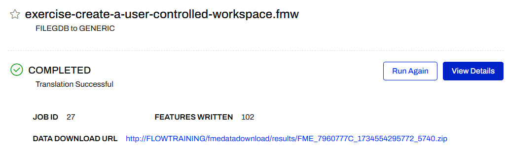
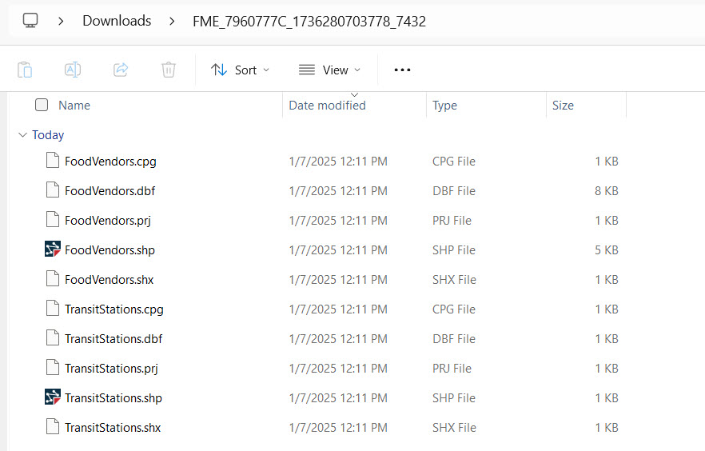
Now you have successfully adapted a workspace to allow for user control of the community feature types and output format. This provides greater flexibility for accessing and receiving data for yourself and other users with access to the workspace on FME Flow.